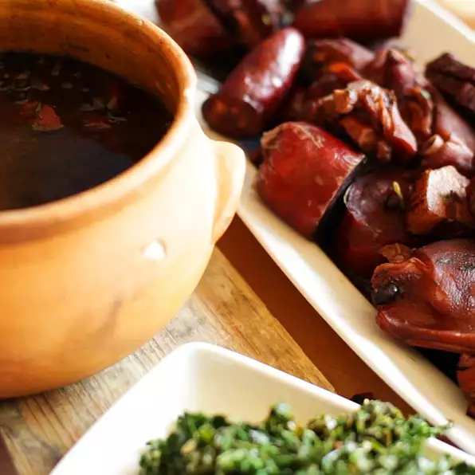

Feijoada

Description
Feijoada is a traditional Brazilian black bean stew which can incorporate as many as 15 types of meat, including tongue (lingua), beef (carne de vaca) and pork (carne de porco). Enjoy it with a caipirinha.
45 minutes prep and 5 hours cooking. Serves 6 people.
Ingredients
- 1 1/2 pounds whole beef tongue
- 1 quart water
- 1 (12 ounce) bag dried black beans
- 4 ounces dried chipped beef
- 1 chourico, cut into 1-inch pieces
- 4 ounces bacon, cut into 1-inch pieces
- 1 tablespoon vegetable oil
- 1 clove garlic, finely chopped
- 1 onion, chopped
- 2 jalapeno peppers, minced
- 1 large tomato, chopped
- 1/8 teaspoon salt
- 1 pinch cayenne pepper
- 1 large orange, thinly sliced